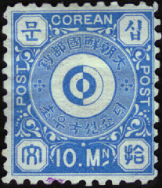
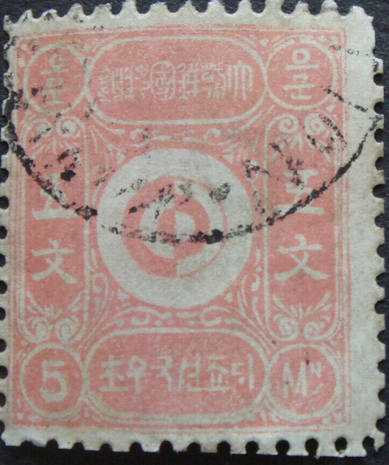
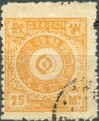
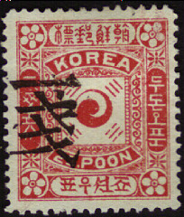
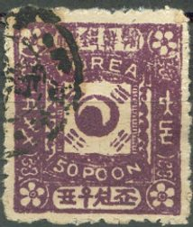
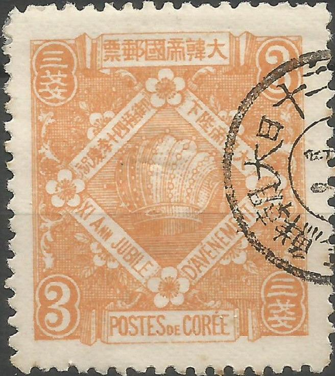

Corée
Note: on my website many of the
pictures can not be seen! They are of course present in the
catalogue;
contact me if you want to purchase it. >



5 m red 10 m blue 25 m orange 50 m green 100 m blue and red
Because of political problems, used stamps are quite rare (forged cancels do exist though!). The stamps have perforation 8 1/2.
Value of the stamps |
|||
vc = very common c = common * = not so common ** = uncommon |
*** = very uncommon R = rare RR = very rare RRR = extremely rare |
||
| Value | Unused | Used | Remarks |
| 5 m | ** | - | |
| 10 m | * | - | |
| 25 m | * | - | |
| 50 m | * | - | |
| 100 m | * | - | |
Forgeries, examples:

These forgeries can be distinguished right away, this circular cancel with rings was never used in Korea! According to 'Focus on forgeries' by V.E.Tyler, these forgeries were probably created by the forger Kamigata from Tokyo (Japan). He apparently made several forgery sets in order to make his forgeries more deceptive.

A Kamigata forgery of the 5 Mn value
of Korea, with circular cancel with "MITATION" which
was cancelled once more with some black blotches (undoubtedly to
hide the "MITATION" cancel).
Other forgeries:



Bogus 2 Mn yellow value.
5 p green 10 p blue 25 p red 50 p violet
Value of the stamps |
|||
vc = very common c = common * = not so common ** = uncommon |
*** = very uncommon R = rare RR = very rare RRR = extremely rare |
||
| Value | Unused | Used | Remarks |
| 5 p | ** | ** | |
| 10 p | * | * | |
| 25 p | ** | ** | |
| 50 p | ** | ** | |
Surcharged (1900) with value and korean (left) and chinese (right) signs
(Sorry, no picture available yet)
'1' on 5 p green '1' on 25 p red
Value of the stamps |
|||
vc = very common c = common * = not so common ** = uncommon |
*** = very uncommon R = rare RR = very rare RRR = extremely rare |
||
| Value | Unused | Used | Remarks |
| 1 on 5 p | R | R | |
| 1 on 25 p | R | R | |
1900 Overprinted with chinese sign (Empire of Korea) in red or black
Black overprint; sorry, for the small size of the image
5 p green 10 p blue 25 p red 50 p violet
Value of the stamps |
|||
vc = very common c = common * = not so common ** = uncommon |
*** = very uncommon R = rare RR = very rare RRR = extremely rare |
||
| Value | Unused | Used | Remarks |
| 5 p | *** | *** | |
| 10 p | *** | * | |
| 25 p | *** | *** | |
| 50 p | *** | *** | |
1900 Overprinted with chinese sign (Empire of Korea) in red and with additional surcharge (as above)
Sorry, no image available yet
1 s on 5 p green 1 s on 25 p red
Value of the stamps |
|||
vc = very common c = common * = not so common ** = uncommon |
*** = very uncommon R = rare RR = very rare RRR = extremely rare |
||
| Value | Unused | Used | Remarks |
| 1 on 5 p | R | R | |
| 1 on 25 p | *** | *** | |
Surcharged with value (in Korean characters, 1902)

1 c on 25 p red (2 types) 2 c on 25 p red (2 types) 3 c on 25 p red (error) 3 c on 50 p violet (2 types)
Value of the stamps |
|||
vc = very common c = common * = not so common ** = uncommon |
*** = very uncommon R = rare RR = very rare RRR = extremely rare |
||
| Value | Unused | Used | Remarks |
| 1 c on 25 p | * | * | Type 2: *** |
| 2 c on 25 p | ** | ** | Type 2: *** |
| 3 c on 25 p | R | R | Only one type |
| 3 c on 50 p | * | ** | Type 2: ** |
Forgeries, note the bad quality of the letters and the flower patterns in the corners:

I have seen this same forgery (50 p) with the black 3 c overprint and also the 5 p with no overprint. The inscription on the 5 p value is '.C POON' instead of '5 POON'.
Other forgeries:

Three forgeries of the 10 p value. The second stamp has 'KORKA'
as inscription, in the third forgery, this has been corrected,
but traces of the second 'K' can still be found.
I've been told that the next stamp is also a forgery, I have no further information:
2 r grey 1 c green 2 c blue 2 c blue (other design) 3 c red 4 c red 5 c red 6 c blue 10 c violet 15 c grey 20 c brown 50 c olive and red 1 W grey red and blue 2 W violet and green
Value of the stamps |
|||
vc = very common c = common * = not so common ** = uncommon |
*** = very uncommon R = rare RR = very rare RRR = extremely rare |
||
| Value | Unused | Used | Remarks |
| 2 r | * | * | |
| 1 c | * | * | |
| 2 c | ** | ** | Type 1, symbol at the bottom |
| 2 c | *** | *** | Type 2, symbol in center |
| 3 c | ** | ** | |
| 4 c | ** | ** | |
| 5 c | ** | ** | |
| 6 c | ** | ** | |
| 10 c | ** | ** | |
| 15 c | *** | *** | |
| 20 c | *** | *** | |
| 50 c | R | R | |
| 1 W | R | R | |
| 2 W | RR | RR | |


The stamp with "SEOUL 8 OCT 02 COREE" might be
cancelled to order (I've seen other stamps with exactly the same
cancel).
3 c orange
This stamp has perforation 11.
Value of the stamps |
|||
vc = very common c = common * = not so common ** = uncommon |
*** = very uncommon R = rare RR = very rare RRR = extremely rare |
||
| Value | Unused | Used | Remarks |
| 3 c | *** | ** | |
A forgery of this stamp is described in 'Focus on Forgeries' by Varro E. Tyler. This forgery has the inscription "XI. ANN" instead of "XL. ANN" (the "L" is replaced by a "I").


Primitive forgery with inscription "XI. ANN" instead of
"XL. ANN"; also note that the "3"s are
totally different. The accent on the "E" of
"JUBILÉ" is missing.
According to the book 'Focus on Forgeries' two different forgeries with "XI." instead of "XL." were made by the forger Kamigata of Tokyo (Japan).


Another, more sophisticated forgery also with inscription
"XI. ANN" instead of "XL. ANN", the accent on
the "E" of "JUBILÉ" is missing. On the most
left hand side of the hat, there are only 6 pearls (genuine
stamps have 7 pearls there). Also note that the shading to the
right of the upper text ornament is different from a genuine
stamp (just left to the large "3" in the upper right
corner).

(Reduced size)
2 r grey 1 c brown 3 c green 3 c orange 4 c red 5 c brown 6 c violet 10 c blue 15 c brown on yellow 20 c brown on yellow 50 c red on green 1 W violet on grey 2 W violet on orange
Value of the stamps |
|||
vc = very common c = common * = not so common ** = uncommon |
*** = very uncommon R = rare RR = very rare RRR = extremely rare |
||
| Value | Unused | Used | Remarks |
| 2 r | * | * | |
| 1 c | ** | ** | |
| 2 c | * | * | |
| 3 c | ** | ** | |
| 4 c | *** | *** | |
| 5 c | *** | *** | |
| 6 c | *** | *** | |
| 10 c | *** | *** | |
| 15 c | *** | *** | |
| 20 c | *** | *** | |
| 50 c | R | R | |
| 1 W | R | R | |
| 2 W | R | R | |
These stamps were no longer valid after the 1st July 1905. After that date, stamps of Japan were used in Kora
(Reduced size)

5 r grey (overprint in red) 1 s brown (overprint in red) 1 1/2 s blue 2 s green (overprint in red) 3 s red 3 s red (marriage) 4 s red 5 s orange (overprint in red) 8 s olive (overprint in red) 10 s blue 15 s violet 20 s red 25 s green (overprint in red) 50 s brown 1 y red
Don't confuse these stamps with the stamps of the Japanese offices in China.
Value of the stamps |
|||
vc = very common c = common * = not so common ** = uncommon |
*** = very uncommon R = rare RR = very rare RRR = extremely rare |
||
| Value | Unused | Used | Remarks |
| 5 r | * | * | |
| 1 s | * | * | |
| 1 1/2 s | R | R | |
| 2 s | ** | ** | |
| 3 s | * | * | |
| 3 s | *** | *** | Marriage |
| 4 s | *** | *** | |
| 5 s | *** | ** | |
| 8 s | *** | *** | |
| 10 s | ** | * | |
| 15 s | *** | * | |
| 20 s | *** | * | |
| 25 s | *** | *** | |
| 50 s | R | *** | |
| 1 Y | R | *** | |

(Stamp of Japan, used in Korea)
5 r grey 1/2 s grey 1 s brown 1 1/2 s blue 1 1/2 s violet 2 s green 3 s red 3 s red (marriage) 4 s red 5 s orange 6 s brown 8 s olive 10 s blue 15 s violet 20 s red 25 s green 50 s brown 1 Y red 5 Y green (man) 10 Y black (man)
Value of the stamps |
|||
vc = very common c = common * = not so common ** = uncommon |
*** = very uncommon R = rare RR = very rare RRR = extremely rare |
||
| Value | Unused | Used | Remarks |
| 5 r | * | * | |
| 1/2 s | * | * | |
| 1 s | * | * | |
| 1 1/2 s blue | ** | ** | |
| 1 1/2 s violet | * | * | 1907? |
| 2 s | * | * | |
| 3 s red | * | c | Two shades of red were issued |
| 3 s | *** | *** | Marriage |
| 4 s | ** | ** | |
| 5 s | ** | * | |
| 6 s | *** | * | 1907? |
| 8 s | *** | *** | |
| 10 s | ** | c | |
| 15 s | ** | * | |
| 20 s | *** | * | |
| 25 s | *** | *** | |
| 50 s | *** | * | |
| 1 Y | *** | * | |
| 5 Y | RR | *** | Also issued with watermark 'Wavy Lines' (1914?) |
| 10 Y | RRR | RR | Also issued with watermark 'Wavy Lines' (1914?) |
1/2 s brown 1 s orange 1 1/2 s blue 2 s green 3 s red 4 s red 5 s violet 6 s brown (1920) 8 s grey (1920) 10 s blue 20 s lilac 25 s green 30 s brown (1920) 50 s brown (1920) 1 Y green and lilac
These stamps exist on paper without or with watermark 'Wavy Lines' (1914).
Value of the stamps |
|||
vc = very common c = common * = not so common ** = uncommon |
*** = very uncommon R = rare RR = very rare RRR = extremely rare |
||
| Value | Unused | Used | Remarks |
| Cheapest types | |||
| 1/2 s | * | c | |
| 1 s | * | * | |
| 1 1/2 s | * | * | |
| 2 s | * | c | |
| 3 s | * | c | |
| 4 s | * | * | |
| 5 s | ** | * | Only with watermark |
| 6 s | *** | *** | Only with watermark |
| 8 s | *** | *** | Only with watermark |
| 10 s | ** | c | |
| 20 s | *** | * | |
| 25 s | *** | * | |
| 30 s | *** | *** | Only with watermark |
| 50 s | *** | *** | Only with watermark |
| 1 Y | R | * | |


{kind=link}
{kind=link}
{kind=link}
{kind=link}
{kind=link}
{kind=link}
{kind=link}